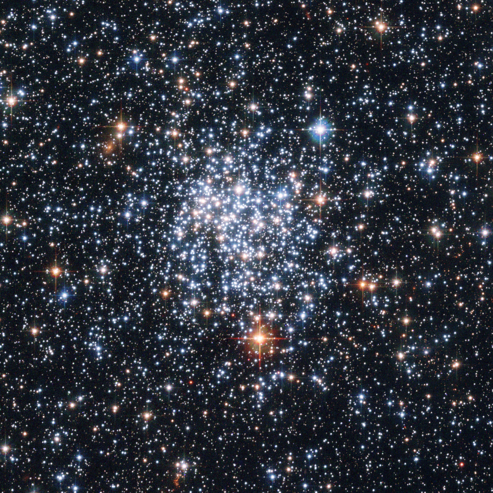

Forrige side🙂 🙁hovedserietilpasning

Her ser vi en åpen hop, kalt NGC265. Denne åpne hopen ligger faktisk ikke i Melkeveien men i en liten satelitt-galakse til Melkeveien (en galakse som går i bane rundt Melkeveien som en “måne”) som heter SMC (Small Magellanic Clound, lille Magellanske sky). Du kjenner kanskje til en annen slik åpen hop allerede: Pleiadene eller “de syv søstre” er en åpen hop der de sterkeste stjernene er godt synlig uten teleskop.Neste side
Bilde: HST/NASA/ESA